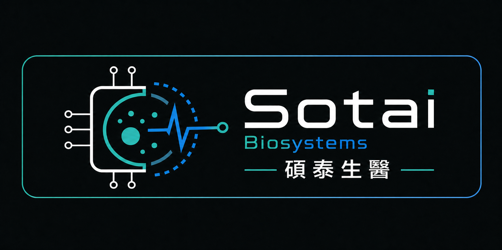
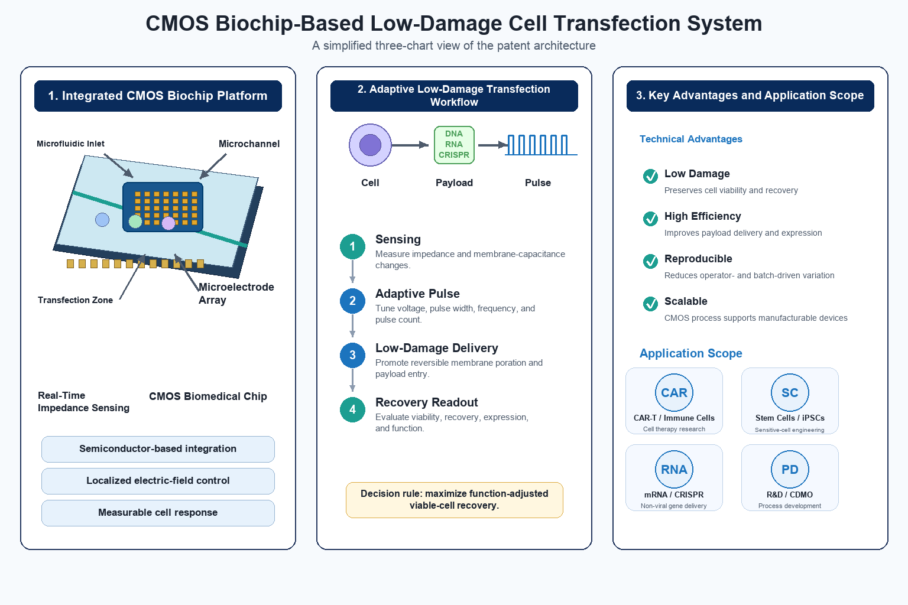
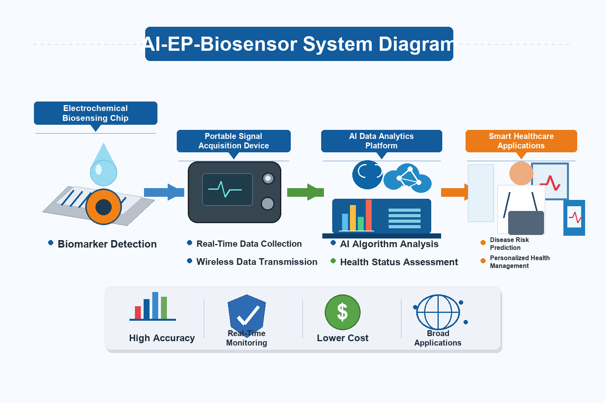

CMOS Biochip
Mature semiconductor manufacturing can support device-to-device consistency, scalable production, and lower long-term cost.

Sotai BiosystemsCMOS-AI smart electroporation
Building a semiconductor-enabled platform to make cell transfection and cell engineering more reproducible, less damaging, and easier to scale.
Biochip architecture for manufacturable, repeatable cell-processing devices.
Parameter optimization across pulse conditions, payloads, viability, and outcomes.
Designed for DNA, mRNA, siRNA, proteins, CRISPR/Cas, and primary-cell workflows.
Platform
Sotai combines CMOS biochips, microelectrode arrays, pulse-control electronics, and biological readouts into a reproducible transfection feedback loop.
Mature semiconductor manufacturing can support device-to-device consistency, scalable production, and lower long-term cost.
Localized electric-field control enables more precise interaction among field strength, cell state, and payload delivery.
Standardized pulse delivery is designed to reduce operator variation and improve repeatability across experiments.
The platform balances delivery efficiency with viability, recovery, expansion potential, and downstream cell function.

AI relevance
Sotai is designed to connect chip behavior, pulse parameters, cell response, payload type, transfection efficiency, viability, recovery, and functional outcomes.

Regenerative Medicine Applications
Sotai is building a semiconductor-enabled platform for research and co-development involving stem cells, iPSCs, T/NK immune cells, and non-viral delivery.
Future cell pilots are expected to evaluate transfection efficiency, cell viability, viable-cell recovery, and batch-to-batch reproducibility.
Research status: These applications are future research and co-development directions. They do not indicate completed therapeutic, clinical, safety, or medical-device validation.
Engineering workflows for gene delivery and viable-cell recovery.
Chip, interface, and data requirements for non-viral transfection or editing workflows.
Process development for DNA, mRNA, proteins, and CRISPR/Cas payloads.
Batch-to-batch reproducibility, closed-operation concepts, and process-data traceability.
Company
Sotai Biosystems is developing a CMOS-AI smart electroporation platform at the intersection of semiconductors, biological process control, and AI optimization.
Contact
We welcome discussion with startup programs, strategic investors, semiconductor partners, healthcare AI teams, translational research groups, and biomanufacturing collaborators.
Dr. Bronte Sun
Chief Executive Officer
bronte@sotaibiosystems.com.tw
+886932308469
Dr. Chun-Lung Lien
Founder / Business Contact
andrew@sotaibiosystems.com.tw
+886-905-936-000